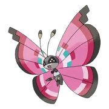
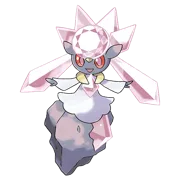

CODE · UNTIL 7 JANUARY 2027
Shiny Xerneas
Choose Get with Code/Password and enter CELEBRATE30TH. This is a separate gift from the Xerneas encounter in Mission 40.
Current Mystery Gifts, internet-triggered extra missions and completion prizes, checked on 19 November 2026. Expiring offers have dates; check the in-game gift list before relying on an older guide.
Unlock Mable’s Research rewards, open the X menu, then choose Link Play → Mystery Gift. Select Get via Internet for a listed distribution or Get with Code/Password for a code. An internet connection and linked Nintendo Account are needed; a paid Nintendo Switch Online subscription is not required for these gifts.
Choose Get with Code/Password and enter CELEBRATE30TH. This is a separate gift from the Xerneas encounter in Mission 40.

Choose Get via Internet to claim the special pattern after the community Vivillon Challenge milestone.

Claim Diancite via Internet, finish the main story, then talk to Mimi at the Looker Bureau. Her extra request leads to Diancie.

Claim both stones via Internet after unlocking Mystery Gift. After the main story, follow Project M through Lysandre Café and the labs.

Claim the “Special distortion detected!” gift via Internet. After one or more DLC Hyperspace adventures, enter the marked special distortion and defeat Mega Garchomp Z for Garchompite Z.
The Switch 2 Edition + Mega Dimension bundle includes a unique serial code. Redeem it under Get with Code/Password if your copy supplied one; this is not a universal password.
Your first Z-A Pokémon deposit unlocks Alpha Chikorita, Tepig and Totodile in mobile HOME. Completing its Lumiose, Hyperspace and Mega Evolution Pokédexes unlocks Shiny Volcanion.
Finish every task in a Hyperspace pocket to reveal its golden Bonus Ball. Catch or defeat Alphas for a chance at Seeds of Mastery and Exp. Candy. Trade Colorful Screws for Canari plush upgrades; collecting all 100 and buying the set unlocks the giant plush for Hotel Z. Ranked battle Mega Stones depend on the active season, so inspect that season’s in-game rewards before grinding.
Open the screw and item checklistSeason X has returning battle-only Mega Stones, special Poké Balls and end-of-season Mega Shards.
The dates and rewards above are from the owner’s three-page PDF, checked on 19 November 2026. The Xerneas and Vivillon dates were independently checked against official announcements. Distribution schedules, season rewards and availability can change, so confirm the current Mystery Gift and Ranked Battle lists in your game.
Continue with Pokémon HOME transfers, Legendary encounter routes, Mable’s research rewards or the main walkthrough. The original ChatGPT Site remains a separate, unchanged edition.